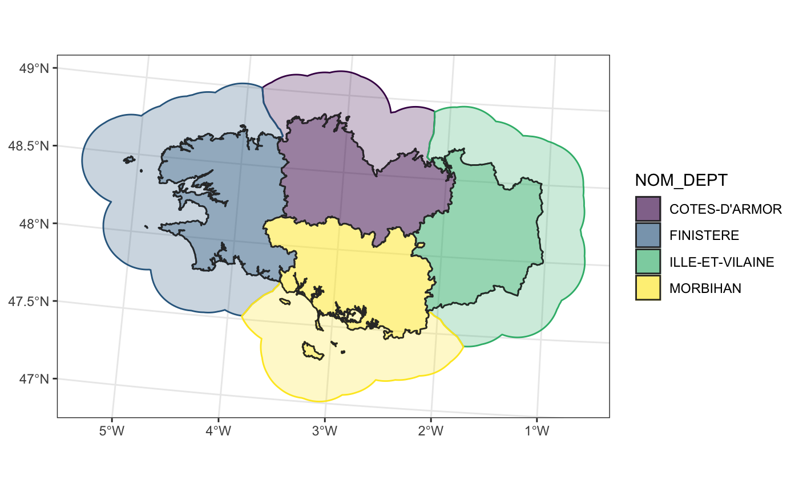

regional-seas-buffer.Rmdlibrary(cartomisc) library(sf) #> Linking to GEOS 3.8.1, GDAL 3.1.1, PROJ 6.3.1 library(dplyr) #> #> Attaching package: 'dplyr' #> The following objects are masked from 'package:stats': #> #> filter, lag #> The following objects are masked from 'package:base': #> #> intersect, setdiff, setequal, union library(ggplot2)
# Define where to save the dataset extraWD <- tempdir() # Get some data available to anyone if (!file.exists(file.path(extraWD, "departement.zip"))) { githubURL <- "https://github.com/statnmap/blog_tips/raw/master/2018-07-14-introduction-to-mapping-with-sf-and-co/data/departement.zip" download.file(githubURL, file.path(extraWD, "departement.zip")) unzip(file.path(extraWD, "departement.zip"), exdir = extraWD) }
departements_l93 <- read_sf(dsn = extraWD, layer = "DEPARTEMENT") # Reduce dataset bretagne_l93 <- departements_l93 %>% filter(NOM_REG == "BRETAGNE")
regional_seas()
bretagne_regional_2km_l93 <- regional_seas( x = bretagne_l93, group = "NOM_DEPT", dist = units::set_units(30, km), # buffer distance density = units::set_units(0.5, 1/km) # density of points (the higher, the more precise the region attribution) )
ggplot() + geom_sf(data = bretagne_regional_2km_l93, aes(colour = NOM_DEPT, fill = NOM_DEPT), alpha = 0.25) + geom_sf(data = bretagne_l93, aes(fill = NOM_DEPT), colour = "grey20", alpha = 0.5) + scale_fill_viridis_d() + scale_color_viridis_d() + theme_bw()
